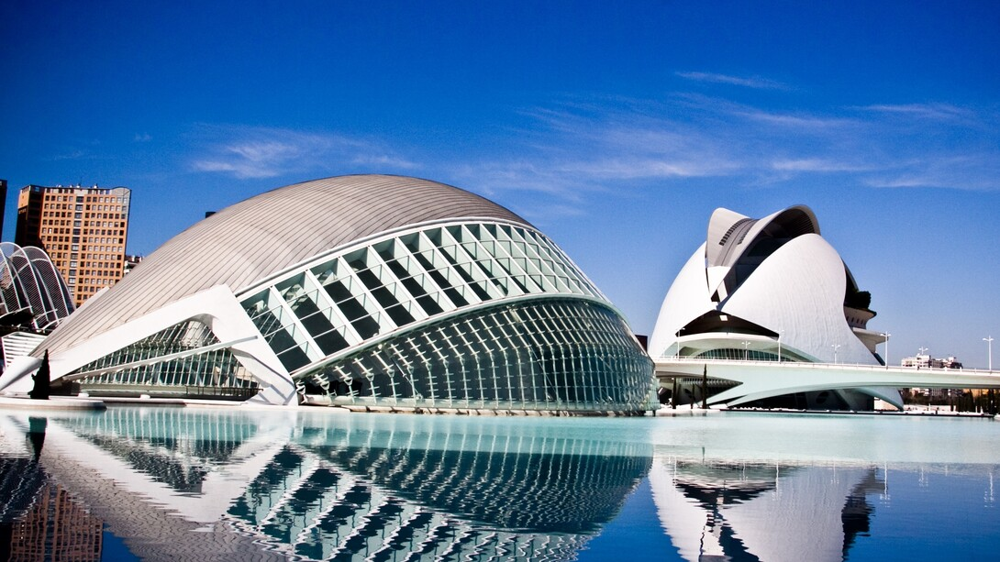

Web de las fiestas de Valencia
Donde dormir en valencia
Las mejores zonas dónde alojarse en Valencia.
En Valencia vais encontrar una amplia oferta hotelera a precios bastante asequibles, aunque si venís en temporada alta os conviene reservar con mucha antelación porque es una ciudad muy turística.
Aquí os contamos las mejores zonas dónde alojarse en Valencia y los hoteles recomendados en cada barrio, con sus ventajas y desventajas, para que elijáis el que mejor se acople a vuestro gusto y presupuesto.
1. El barrio del Carmen, la mejor zona para alojarse en Valencia
La mejor zona para alojarse en Valencia es el barrio del Carmen, el casco antiguo de la ciudad, donde se encuentran muchos de los puntos de interés que visitar en la ciudad y un montón de restaurantes con mucho ambiente nocturno.
Allí estaréis cerca de la Plaza de la Virgen, las torres de Quart, las Torres de Serrano, la Catedral… Además podréis llegar andando a la mayoría de los lugares turísticos.
El Carmen también es una excelente zona para hospedarse si váis en pareja ya que por ahi encontraréis muchos hoteles boutique y apartamentos reformados con mucho encanto. Aunque no es la zona más barata, si reserváis con antelación podéis encontrar buenos precios.
🏨 Aquí os dejamos algunos hoteles recomendados en el Barrio del Carmen:
Mon Suites Catedral:Mon Suites Catedral: modernos apartamentos ubicados junto a la Plaza de la Reina, con aparcamiento privado por un suplemento. En las inmediaciones hay varias cafeterías que sirven desayunos y numerosos sitios para comer. La Lonja de la Seda se encuentra a solo 350 metros del Mon Suites Catedral. Asimismo, el establecimiento se halla a 20 minutos a pie de las estaciones de tren y autobuses de Valencia.
Caro Hotel: un exclusivo hotel con piscina, situado en un palacio del siglo XIX. Su restaurante posee una estrella michelín y sus habitaciones tienen un precioso diseño minimalista. Está a solo 200 metros de la catedral de la ciudad.
Caro Hotel: un exclusivo hotel con piscina, situado en un palacio del siglo XIX. Su restaurante posee una estrella michelín y sus habitaciones tienen un precioso diseño minimalista. Está a solo 200 metros de la catedral de la ciudad.
2. Centro de Valencia, la zona más comercial donde alojarse en Valencia
La zona del centro de Valencia, en los alrededores de la plaza del ayuntamiento, es también una ubicación ideal para alojarse en la ciudad del Turia pues se encuentra al lado del barrio del Carmen y de la estación de trenes.
Es la zona mejor comunicada de la ciudad por transporte público, aunque también es la más cara. Además es la principal zona comercial de la ciudad, por lo que es perfecta si queréis ir de compras y de noche es bastante tranquila.
🏨 Aquí os dejamos algunos hoteles recomendados en el centro de Valencia:
Zalamera BnB. Este bed & breakfast está ubicado en un hermoso edificio con una fachada de 1880, y cuenta con habitaciones nuevas y otras instalaciones. Por las mañanas se sirve un desayuno caliente con productos de la zona. El barrio del Carmen está a 2 km y la Ciudad de las Ciencias a 2.4 km.
Singular Apartments Station: se encuentra en Valencia, a 100 metros de la estación ferroviaria del Norte y a 5 minutos a pie del centro histórico. Hay gran variedad de bares, restaurantes y supermercados a no más de 100 metros del establecimiento. El tradicional Mercado Central está a 10 minutos a pie.
3. Barrio de Ruzafa, la zona más animada dónde alojarse en Valencia
El barrio de Ruzafa es una de las zonas de moda de la ciudad, donde encontraréis una animada vida nocturna con muchos restaurantes y bares de copas. Si estáis buscando fiesta, es la zona perfecta donde alojarse en Valencia, pero tratad de buscar un alojamiento que no sea ruidoso o no podréis dormir.
En esta zona predominan sobre todo los apartamentos turísticos y los hostels, por lo que es bastante económica.
Aunque no llega el metro, podréis ir caminando en 15 minutos al centro de la ciudad y en 30 minutos al barrio del Carmen o a la ciudad de las Ciencias.
🏨 Aquí os dejamos algunos hoteles recomendados en el centro de Valencia:
Petit Palace Ruzafa: es un hotel boutique que se encuentra en el centro de Valencia, en pleno corazón de Ruzafa. El hotel está rodeado por bares, restaurantes y tiendas. Se ofrece un desayuno continental con productos saludables.
City garden bed and breakfast: está ubicado a a 1,8 km del parque Jardín del Turia y sirve un desayuno continental. Las habitaciones modernas con un bonito patio interior compartido, donde sirven un abundante desayuno continental.